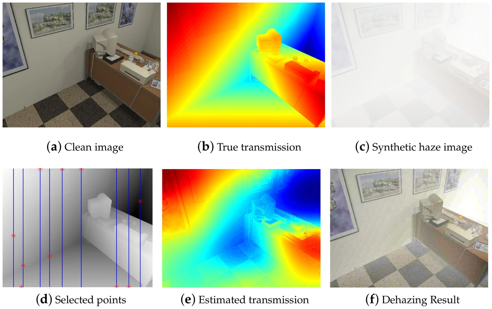
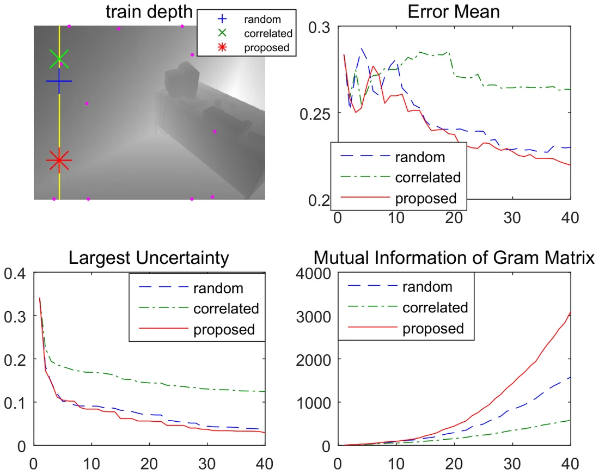
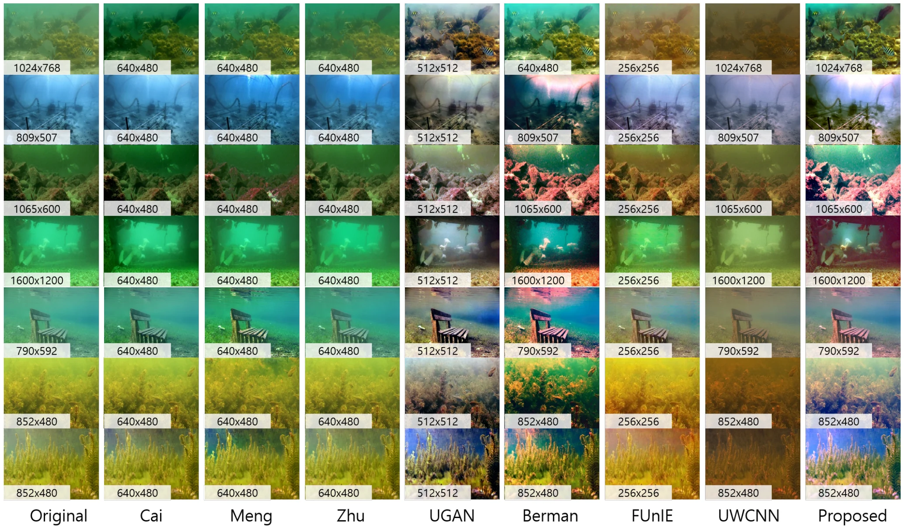
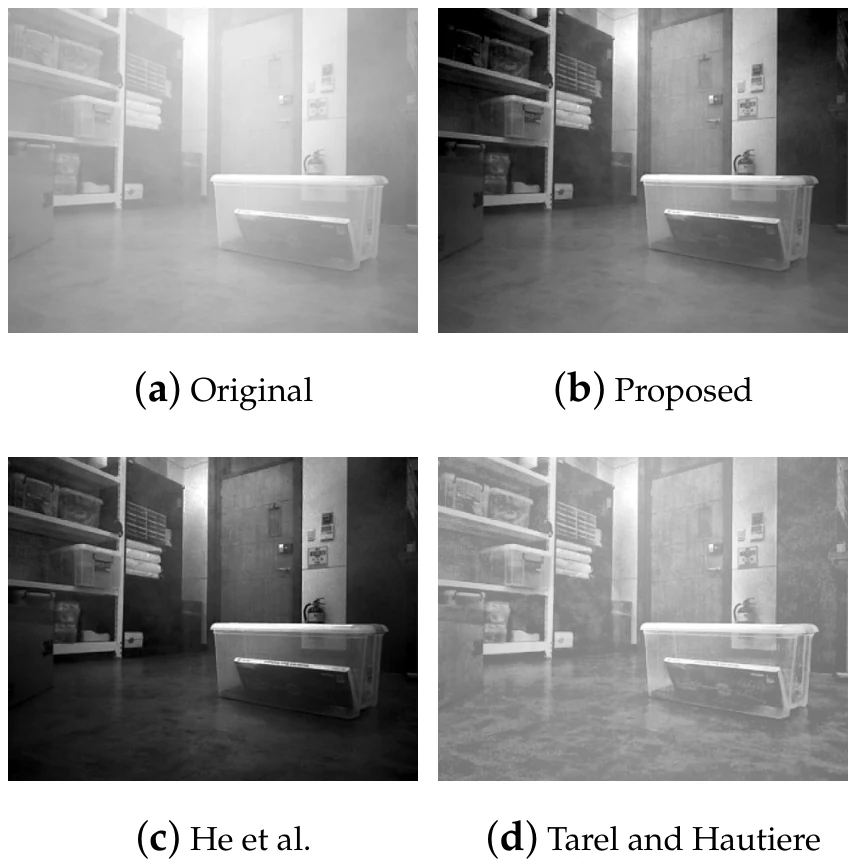
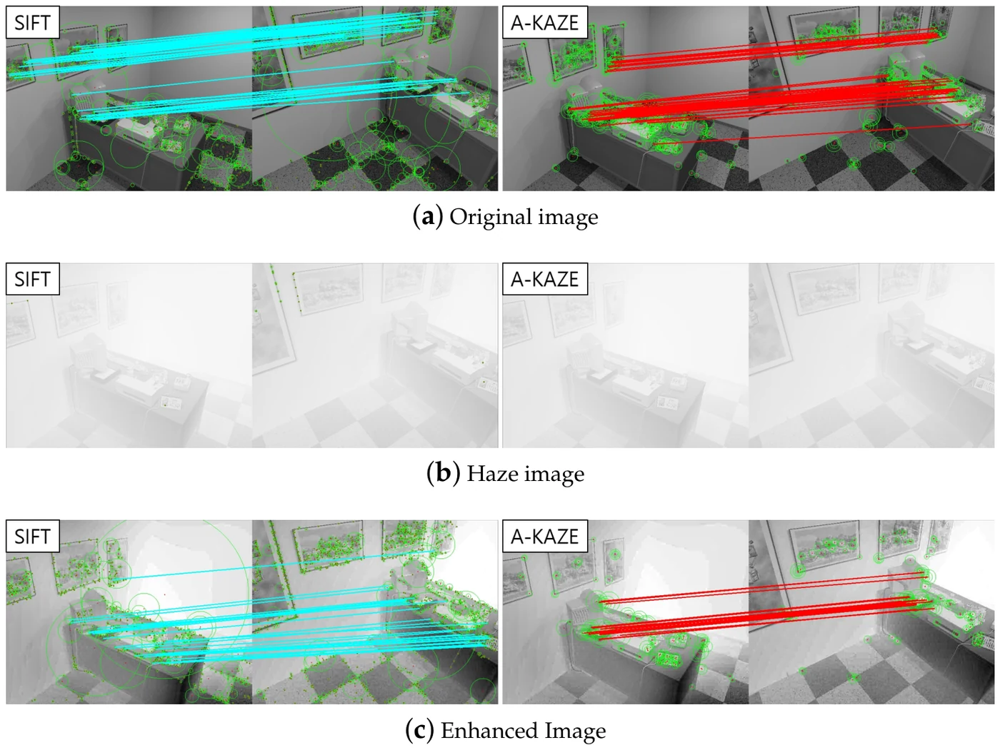

A few sparse depth points are enough to dehaze color and grayscale images online: an incremental Gaussian process turns them into a dense depth map, and mutual information keeps only the most informative points.
Abstract
We propose an online dehazing method with sparse depth priors using an incremental Gaussian Process (iGP). Conventional approaches focus on achieving single image dehazing by using multiple channels. In many robotics platforms, range measurements are directly available, except in a sparse form. This paper exploits direct and possibly sparse depth data in order to achieve efficient and effective dehazing that works for both color and grayscale images. The proposed algorithm is not limited to the channel information and works equally well for both color and gray images. However, efficient depth map estimations (from sparse depth priors) are additionally required. This paper focuses on a highly sparse depth prior for online dehazing. For efficient dehazing, we adopted iGP for incremental depth map estimation and dehazing. Incremental selection of the depth prior was conducted in an information-theoretic way by evaluating mutual information (MI) and other information-based metrics. As per updates, only the most informative depth prior was added, and haze-free images were reconstructed from the atmospheric scattering model with incrementally estimated depth. The proposed method was validated using different scenarios, color images under synthetic fog, real color, and grayscale haze indoors, outdoors, and underwater scenes.
Method
1. Online depth with incremental GP
Each sparse depth point is a training input made of its pixel location and color, [u, v, r, g, b], or [u, v, i] for gray images. A GP with a mixture of squared-exponential and neural-network kernels predicts dense depth, and Givens-rotation QR updates let it add new points online without refitting from scratch.
2. Informative point selection
Among the new candidates, the point that shares the least mutual information with the existing training points (minimum Sum of Mutual Information, SMI) is added, so each update covers the region the model knows least. Training stops once the information gain of the Gram matrix drops below 80% of the previous step.
3. Depth-based haze removal
The dense depth drives the atmospheric scattering model. Airlight comes from the brightest pixel among the deepest 0.1% of the depth map, the attenuation coefficient from the nearest and deepest pixels, and a white balance step corrects color casts underwater and indoors. No color-channel prior is involved, so gray images work too.

Results
| Metric ↑ | Synthetic haze (24 images) | O-HAZE (45 real images) | ||
|---|---|---|---|---|
| Best other method | Proposed | Best other method | Proposed | |
| PSNR (dB) | 18.598 (He) | 19.945 | 22.012 (He) | 24.302 |
| SSIM | 0.537 (He) | 0.567 | 0.600 (He) | 0.588 |
| level | 0.554 (He) | 0.590 | 0.162 (GridDehaze) | 0.170 |
| r | 1.826 (GridDehaze) | 2.152 | 1.165 (He) | 1.011 |
Averages over 14 HazeRD and 10 synthetic ICL-NUIM images (synthetic haze) and over 45 O-HAZE outdoor images, against eight model-based and learning-based methods (He, Kim, Cai, Cho, GridDehaze, FFA-Net, AOD-Net, and DehazeFormer). level and r are edge-visibility metrics. Better value in bold.
With ground truth available, the proposed method scores best on all four metrics on synthetic haze. On real outdoor haze it has the best PSNR (24.30 dB) and level, and the second-best SSIM and r.



Runtime. The method processes a 640×480 image in about 0.53–0.59 s in MATLAB on a laptop CPU (Intel i7-9750H), while the compared model-based methods take 1.2–79 s.
BibTeX
@article{yang2023sparse,
title = {Sparse Depth-Guided Image Enhancement Using Incremental GP with Informative Point Selection},
author = {Yang, Geonmo and Lee, Juhui and Kim, Ayoung and Cho, Younggun},
journal = {Sensors},
volume = {23},
number = {3},
pages = {1212},
year = {2023},
doi = {10.3390/s23031212}
}